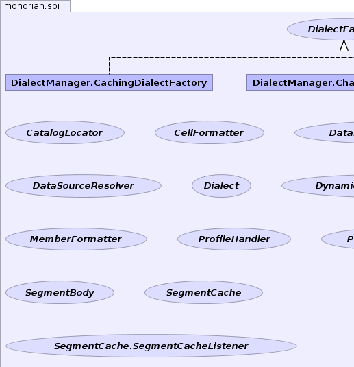
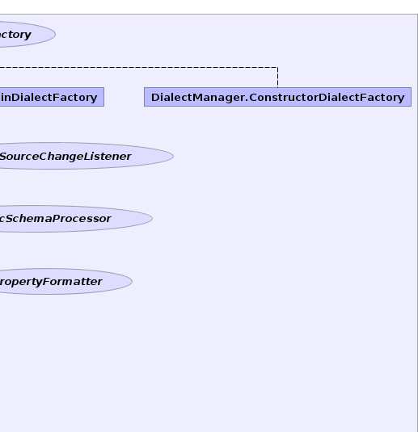
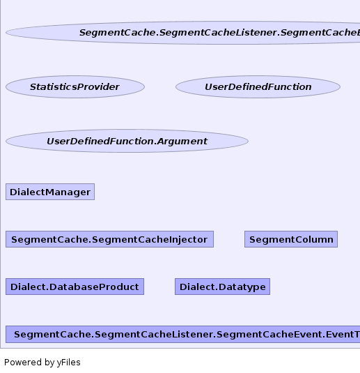
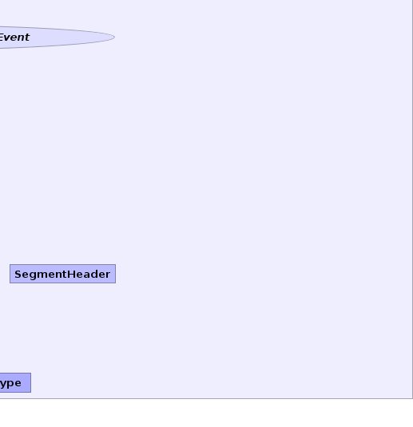

- Overview
- Package
- Class
- Tree
- Deprecated
- Index
- Help
See: Description
| Interface | Description |
|---|---|
| CatalogLocator |
Abstract layer for locating catalog schema content.
|
| CellFormatter |
An SPI to format the cell values.
|
| DataSourceChangeListener | Deprecated
Will be removed with Mondrian 4.0.
|
| DataSourceResolver |
Plugin class that resolves data source name to
DataSource
object. |
| Dialect |
Description of an SQL dialect.
|
| DialectFactory |
Factory that creates
Dialect objects. |
| DynamicSchemaProcessor |
A dynamic schema processor is used to dynamically change
a Mondrian schema at runtime.
|
| MemberFormatter |
An SPI to redefine the caption displayed for members.
|
| ProfileHandler |
Called when a statement has profile information.
|
| PropertyFormatter |
SPI to redefine a member property display string.
|
| SegmentBody |
SegmentBody is the object which contains the cached data of a
Segment.
|
| SegmentCache |
SPI definition of the segments cache.
|
| SegmentCache.SegmentCacheListener |
SegmentCache.SegmentCacheListener objects are used to listen
to the state of the cache and be notified of changes to its
state or its entries. |
| SegmentCache.SegmentCacheListener.SegmentCacheEvent |
Defines the event types that a listener can look for.
|
| StatisticsProvider |
Provides estimates of the number of rows in a database.
|
| UserDefinedFunction |
Definition of a user-defined function.
|
| UserDefinedFunction.Argument |
| Class | Description |
|---|---|
| DialectManager |
Manages
Dialect and DialectFactory
objects. |
| DialectManager.CachingDialectFactory |
Implementation of
DialectFactory that caches
dialects based on data source. |
| DialectManager.ChainDialectFactory |
Implementation of
DialectFactory that tries to
create a Dialect using a succession of underlying factories. |
| DialectManager.ConstructorDialectFactory |
Implementation of
DialectFactory that calls
a class's public <init>(Connection connection) constructor. |
| SegmentCache.SegmentCacheInjector |
The
SegmentCache.SegmentCacheInjector is a means to inject
SegmentCache instances directly into Mondrian,
instead of passing a class name. |
| SegmentColumn |
Constrained columns are part of the SegmentHeader and SegmentCache.
|
| SegmentHeader |
SegmentHeaders are the key objects used to retrieve the segments
from the segment cache.
|
| Enum | Description |
|---|---|
| Dialect.DatabaseProduct |
Enumeration of common database types.
|
| Dialect.Datatype |
Datatype of a column.
|
| SegmentCache.SegmentCacheListener.SegmentCacheEvent.EventType |
Defined the possible types of events used by
the
SegmentCache.SegmentCacheListener class. |
|  |  |
|  |  |